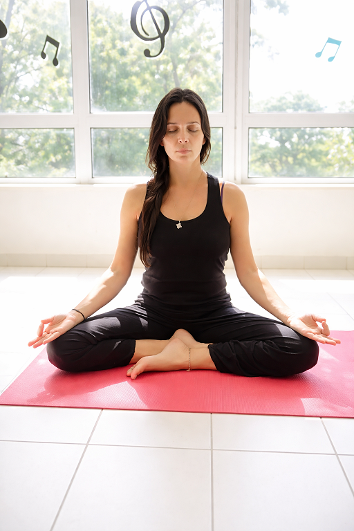

Méditation
Méditations guidées pour soutenir la présence, la clarté et le calme intérieur.

En quoi ça consiste
La séance propose des temps de respiration, de visualisation ou d'observation silencieuse. Le format est accessible aux débutants comme aux personnes déjà familières de la pratique.
Modalités
- Publics : tout public, particuliers et professionnels.
- Lieux : séances proposées au salon ou en extérieur.
- Tarifs communiqués sur demande.
Ces pratiques s’inscrivent dans une démarche de bien-être et ne se substituent pas à un suivi médical.